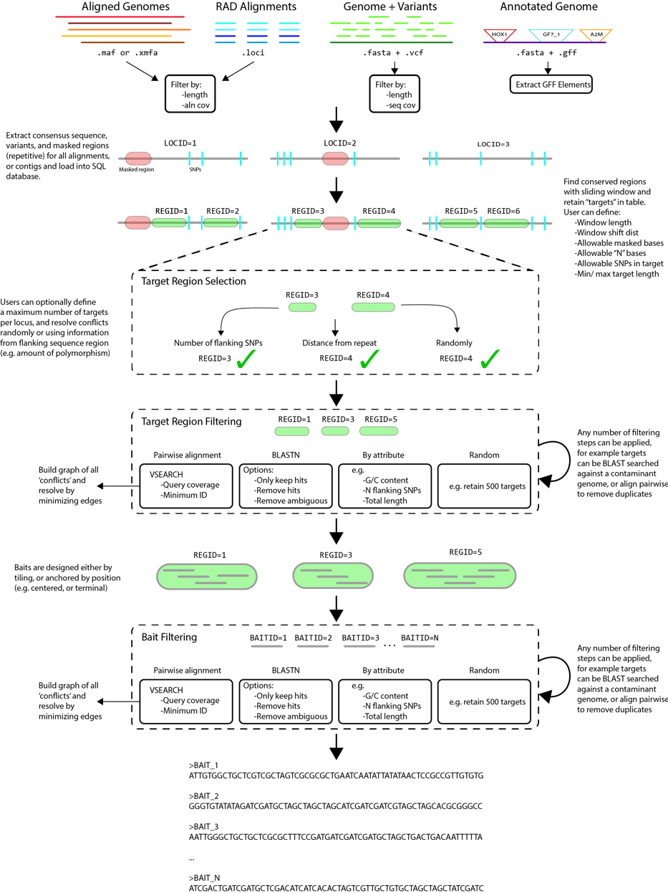

Pipeline description¶
The general process (summarized in Figure 1) is built on a relational database in SQLite, populated, accessed, and parsed in Python. It takes a variety of input file formats, and is written modularly such that adding additional capabilities (e.g. input file formats, filtering schema) can be done without too much difficulty. The workflow is divided into 5 steps, as follows:
Step 1 Alignments (provided as .xmfa, .loci, or .maf) or genomes (provided as .fasta, annotated with .vcf or .gff) will be used to build a consensus sequence of each locus. Step 2 A sliding window will be applied to each consensus to find candidate targets for which baits could be designed Step 3 Targets are then selected (if too close together, or only one allowed per locus), and filtered according to any number of specified filter (e.g. GC content, flanking SNPs, pairwise alignment) Step 4 Passing targets are then parsed to design a putative set of baits Step 5 Baits are then filtered according to selected criteria, and output as FASTA.
